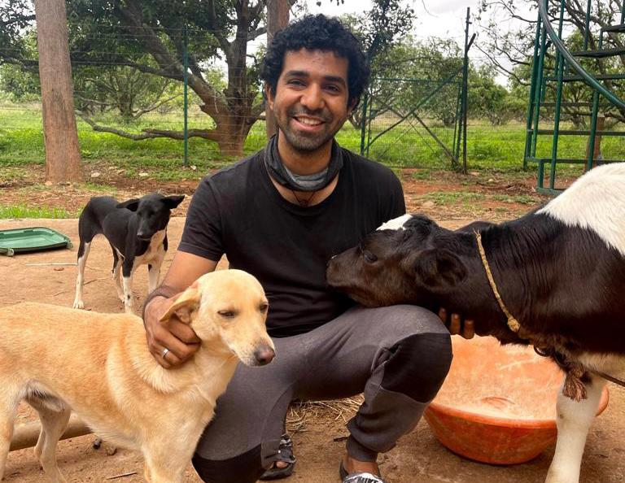

Rotaract
Giving Back to my Community
During the years of my undergrad, a few of my friends and I started a Rotaract Club in my city of Bangalore. Over the years, our club grew on to be one of the biggest Rotaract clubs in the city. We have worked on projects with as many as 400 volunteers, collaborated with the government of Karnataka and trained several hundereds of college students. Since my childhood I have always given back to my community in the form of service. I have always had a positive impact on my local community and society at large by participating in community service. Having a meaningful impact on others' lives by offering their time, talents, and resources is the way I like to spend my time. I have personally felt that participating in community service encourages personal development, improves social ties, and builds a sense of duty and empathy. Community service has enabled me to make a lasting difference and motivate others to follow suit, whether it be by assisting the less fortunate, preserving the environment, or supporting educational projects. I have been an active member of Rotaract for the past 5 years where I have taken up the responsibilities of several key positions like Secretary, President and Chartered Board member.
One project that is close to my heart is the "Food for Thought" Project. During the tough times of Covid, all of us suffered but the ones that were the most impacted were the poor and daily wage workers who didn't have any means of food or nutrition during those times cause unlike us, they didn't have the luxury to Work From Home. Realizing the magnitude of the problem, I stepped up and got into action. I identified several slums in the city of Bangalore that were in dire need of help and contacted the local Police Stations to find out the measures taken by the government to handle this problem, only to find out no one had any solution inplace to fix the problem. With the statistics of the population in each slum, we came up with a plan to distribute Lunch Packets everyday. Funding of the project was arranged first project with the help of several good hearted Rotarians and also with our own salaries. We arranged for volunteers through social media and allocated them to a slum close to their homes and worked with a food delivery partner to transport the food too. Getting permission to step outside our homes duing Covid required us to get special permissions from the police and also ensuring the timely distribution of food was of paramount importance. Even though we were faced with several difficulties during this project, over the course of the 30 days, we gave over 5000 packets of food, 300 liters of milk, 600 N95 masks and 400 packets of bread. Collectively, we spent over 1400 hours and Rs. 1,85,000 on this project. Follow us on Instagram
Apart from Rotaract, I also am a volunteer at ISKCON (International Society of Krishna Consciousness). I take part in various activities at ISKCON related to AskhyaPatra and children education.
Sports & Adventure
My love for outdoors

I started playing Basketball at age of 6 and have represented my state of Karnataka at the National Basketball tournament in Delhi. I have captained the basketball team at various levels and brought laurels to my school and college. Basketball has given me a lot in life and I am forever grateful. Playing team sports has made a huge positive difference in my capacity to function well in a corporate setting. I've learned useful qualities from team sports including communication, cooperation, and problem-solving that are crucial for professional success. I've also improved my ability to adapt to shifting game circumstances and bounce back swiftly from failure.
I also love adventure sports, skateboarding and learnt to surf in Chennai during the Monsoon season and deep sea surfing gets me exhilarated like nothing else. To me, nature is just as important as basketball. I have been to several treks in the Himalayas and I have also trekked all the hills in South India and some of them several times too. Trekking does'nt need to be to different places every time, trek alone is enough for to me decompress and relax from city life. The first thing I did after landing in New York was to go on a trek to Harriman State Park. PS: I am also a certified Yoga Teacher, certified by the AYUSH department (Goverment of India).